Glow Mirror
iPhone · iPad · Mac
Opens instantly.
A 4K mirror.
A mirror the moment you open it. Touching the screen never triggers anything, freeze frames stop the exact moment you tap, and 10-second videos show the back of your hair. One app for iPhone, iPad and Mac.
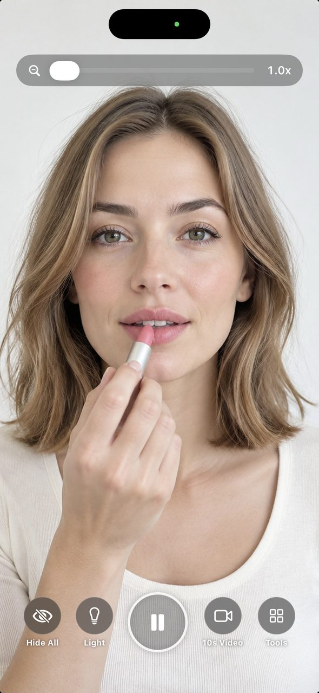
Screens
Six screens from the App Store.
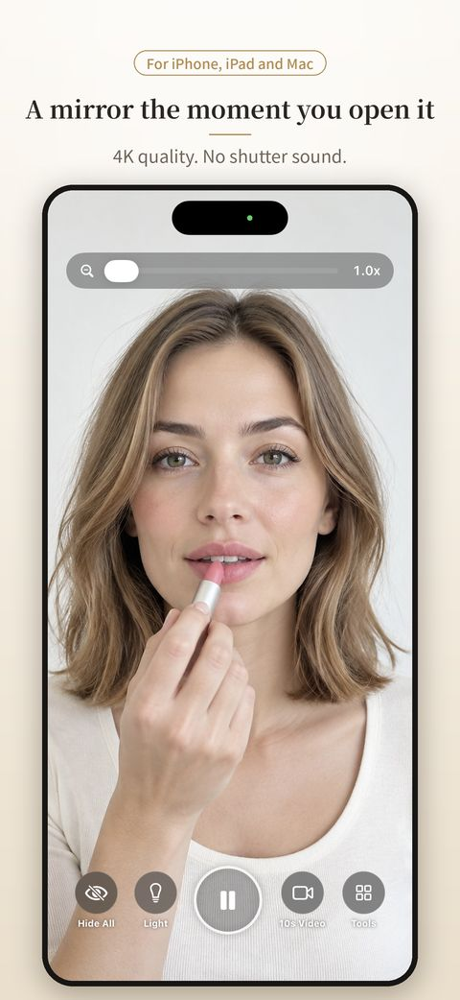
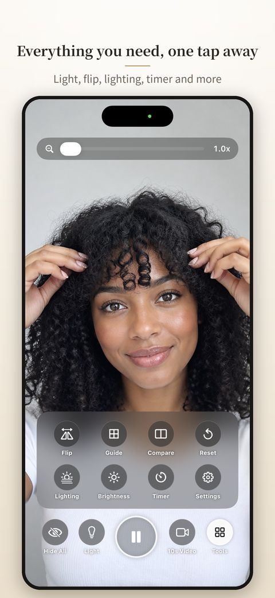
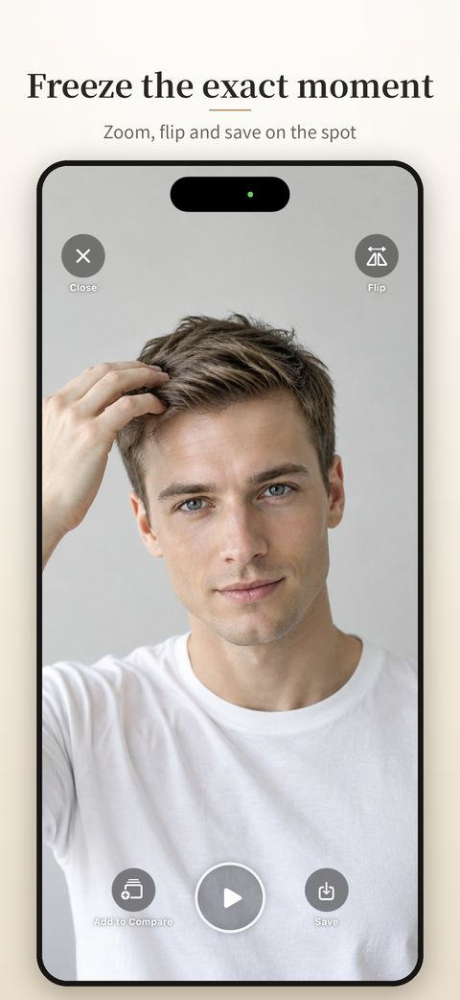
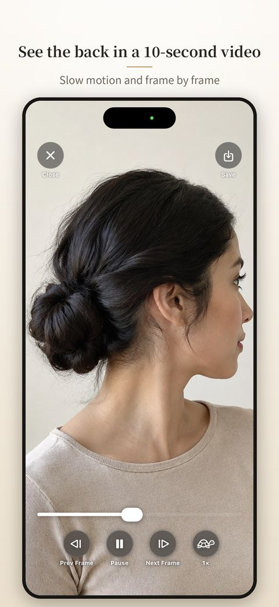
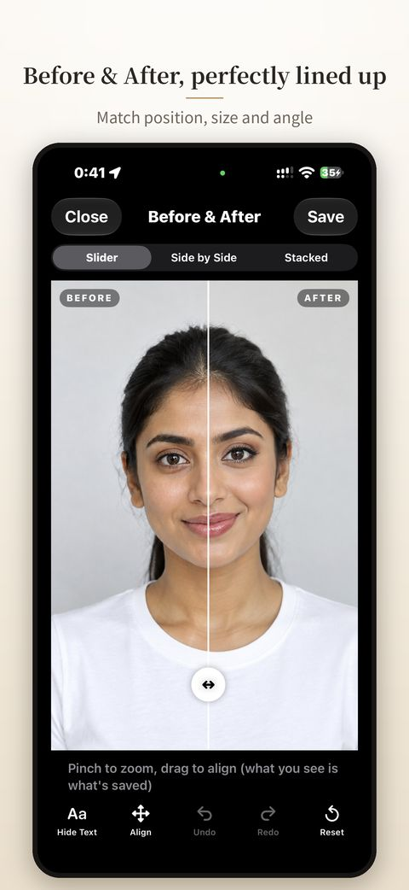
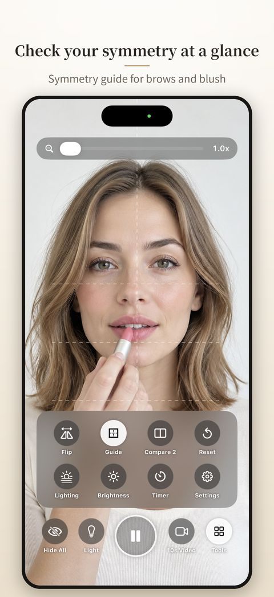
Try it
Try the mirror in your browser.
Try Glow Mirror's basic controls right on this page. Tap "Open the mirror" and allow camera access. If your camera isn't available, you can try it with a sample photo.
- Reverse: the face other people see
- Light: the edges glow to brighten your face
- Guide: balance brows and blush
- Freeze: stops the instant you tap (tap again to resume)
- Zoom: use the slider at the top
The video stays on this page. It is never sent anywhere or saved. For 4K quality, 10-second video and Before & After, get the app.
Uses your camera to show your face.
The video stays on this device.
This is a sample based on the app's mirror screen. Details differ from the actual app.
Why Glow Mirror
What makes it different.
Any app can show your reflection. Glow Mirror is built to be the mirror you hold in your hand every day, without the small annoyances. See for yourself.
01 · iPhone · iPad · Mac
One app. All three devices.
Use the same Glow Mirror on iPhone, iPad and Mac (Apple silicon). Buy Remove Ads once and it applies to every device with the same Apple Account. It is tuned for iPad rotation and Mac windows too.
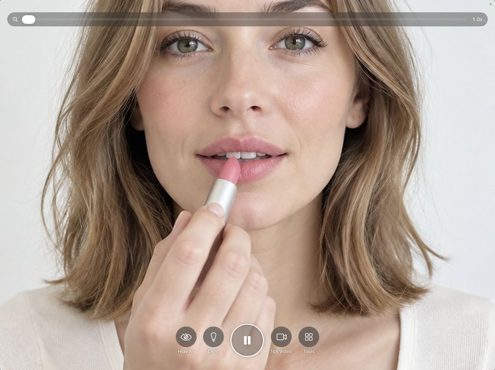
iPad in landscape. The buttons stay in place in portrait too.
02 · No mistouch
Touch it. Nothing happens.
Touching the mirror never takes a photo or changes a setting, so your fingers can rest on the screen. There is no shutter sound, so you can use it on the train or in the office. After 3 seconds the buttons fade so the mirror looks bigger.
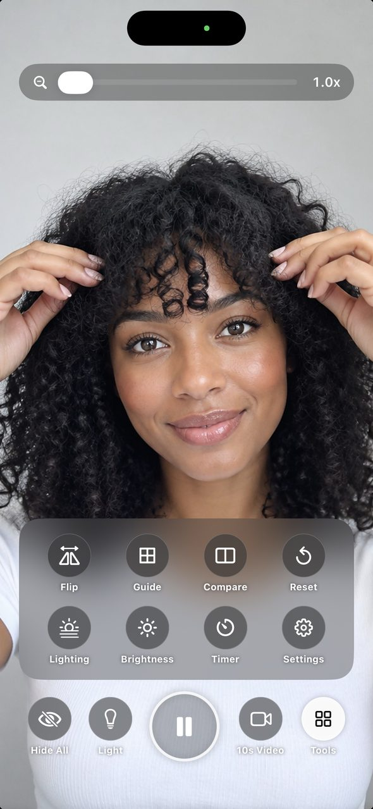
Left: the mirror. Right: Tools open.
03 · Freeze
Freeze the exact moment.
Tap Freeze and the mirror stops on that moment. Pinch to zoom in on the details or flip it. Save it if you like, or just close it. The self-timer can freeze the mirror after 3 seconds.
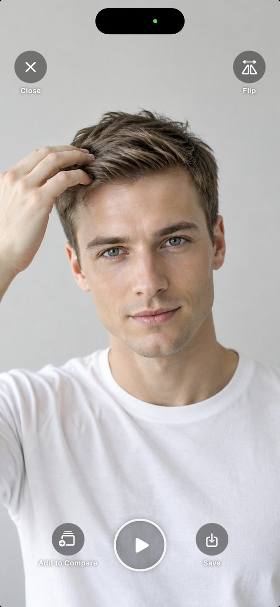
Left: freeze screen. Right: App Store screen.
04 · 10 sec video
See the back in a 10-second video.
Record while slowly turning your head. Slow motion and frame-by-frame playback show your profile, the back of your hair and how an updo turned out. A countdown shows the seconds left while recording.
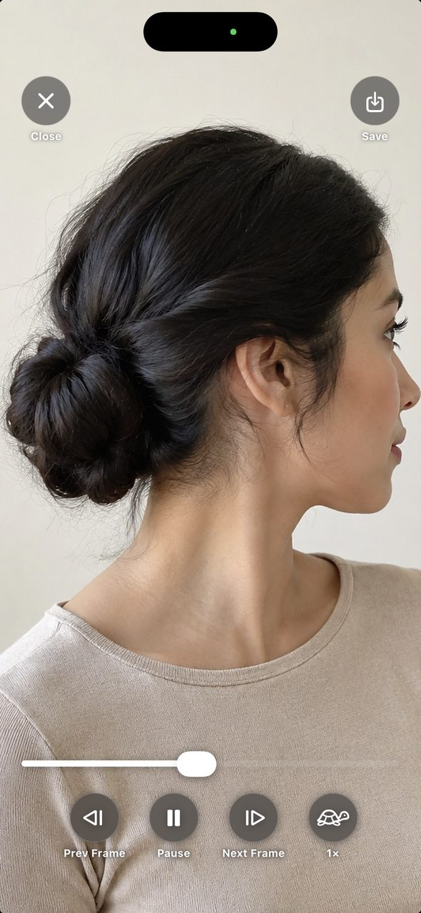
Left: playback with slow motion and frame stepping. Right: App Store screen.
05 · Before / After
Before & After, perfectly lined up.
Compare two photos with a slider, side by side or stacked. Line up both faces by position, size and angle with your fingers, so only the difference stands out. Undo and Redo let you try again. Turn 3 to 10 photos into a flipbook video, or use a ghost overlay to match last time's angle.
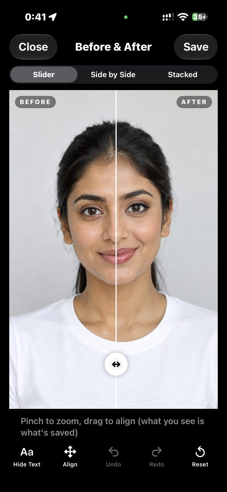
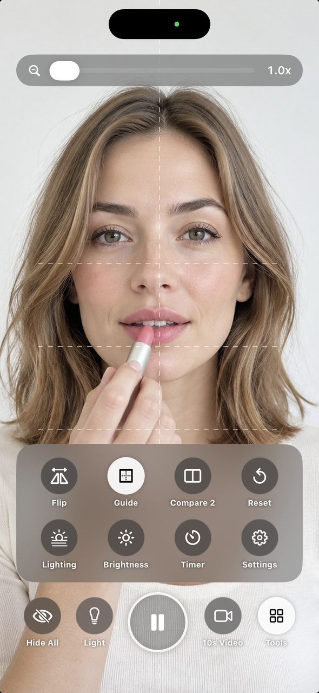
Left: Before & After. Right: symmetry guide.
Everything else
Everything else you want in a mirror.
Reverse
Reverse view
See the face other people see, not the usual mirror image.
Light
Light
Brightens the screen to light your face. Great for dim rooms and touch-ups at night.
Lighting
Lighting preview
See how your makeup looks in daylight, at the office, at sunset or in a restaurant.
Zoom
Zoom up to 10x
Use the slider to zoom in on lashes and brows. Brightness is adjustable too.
Reset
Reset
Lost track of what you turned on? One tap puts reverse, light and guide back to normal.
Your layout
Your buttons
Choose which buttons appear at the bottom, and start with reverse view or the light already on.
iPad · Mac
A mirror on the big screen, too.
iPad works in portrait and landscape. On Mac, double-click the mirror to fit the window to the mirror, and double-click again to restore it. Keep it beside your work for a quick check before a video call.
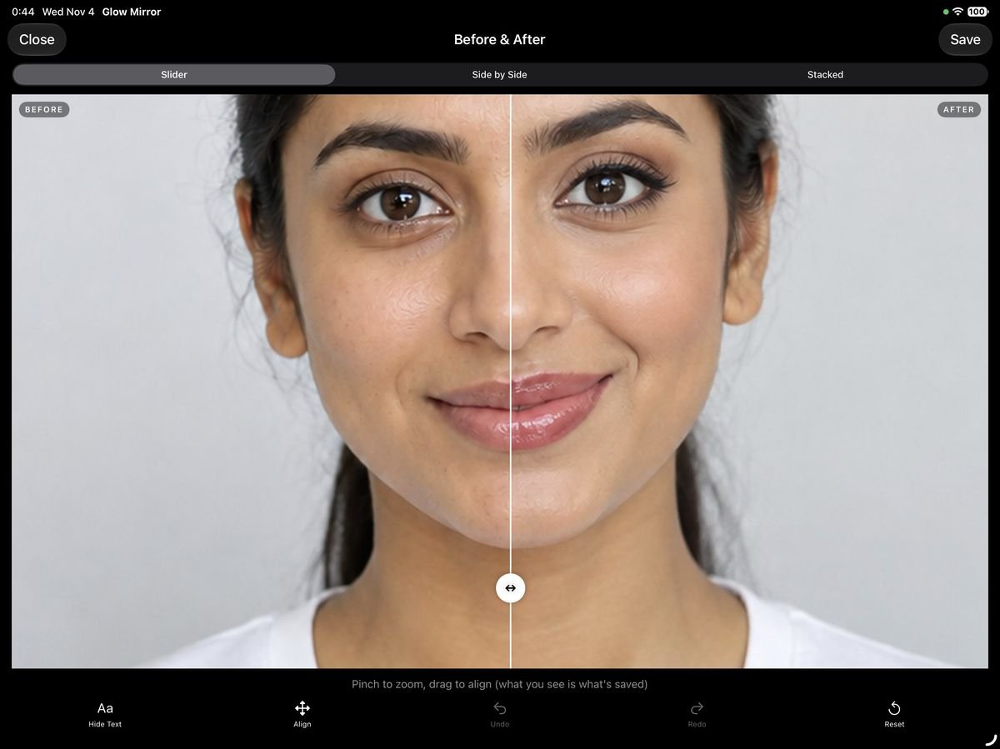
Privacy by design
Your face stays on your device.
A mirror app should be one you can trust.
01
Nothing is sent
Camera images and photos are never sent to the developer or any server.
02
Nothing is captured by surprise
Capturing happens only when you tap a button, with no shutter sound.
03
Nothing is kept
Stills and videos go to Photos only when you tap Save. Close them and they are gone, so your storage stays free.
Price
Every feature is free.
The mirror, freeze, 10-second video and Before & After are all free. Ads are placed where they won't get in the way while you use the mirror.
Remove Ads · one-time purchase
$2.99
- One purchase removes all ads in the app
- Not a subscription
- Removes ads on all your iPhone, iPad and Mac devices with the same Apple Account
- Moved to a new device? Use Settings › Restore Purchases
US price. Prices vary by country or region.
FAQ
Questions
Where are my photos and videos saved?
Only in Photos, and only when you tap Save. Close without saving and they're gone, so your Photos library doesn't fill up.
Does it work on Mac?
Yes, on Macs with Apple silicon (M1 or later). The Mac camera has a different aspect ratio, so the mirror shows black bars on the sides instead of cropping your face. Double-click the mirror to fit the window to it.
Does Remove Ads work on my other devices?
Yes. With the same Apple Account, ads are removed on iPhone, iPad and Mac. On a new device, tap Settings › Restore Purchases.
Do I need an account?
No. Download it and start using it right away.